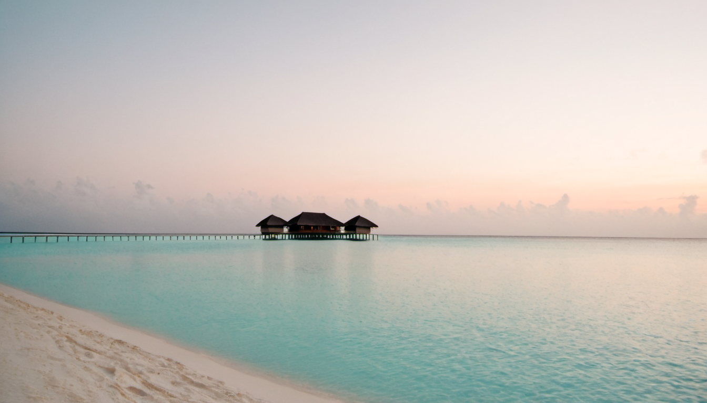
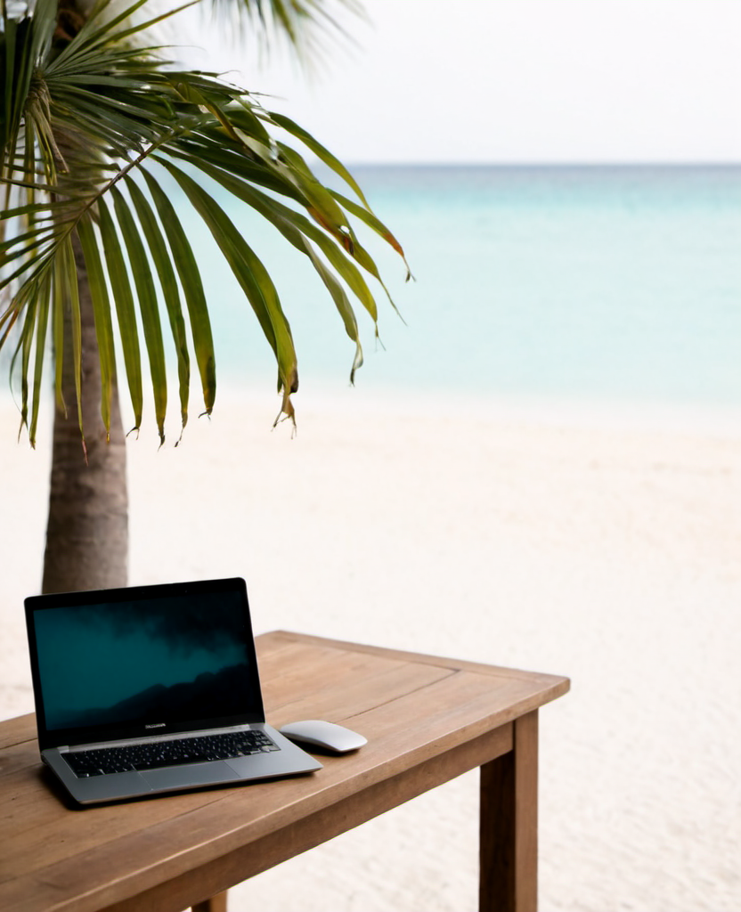
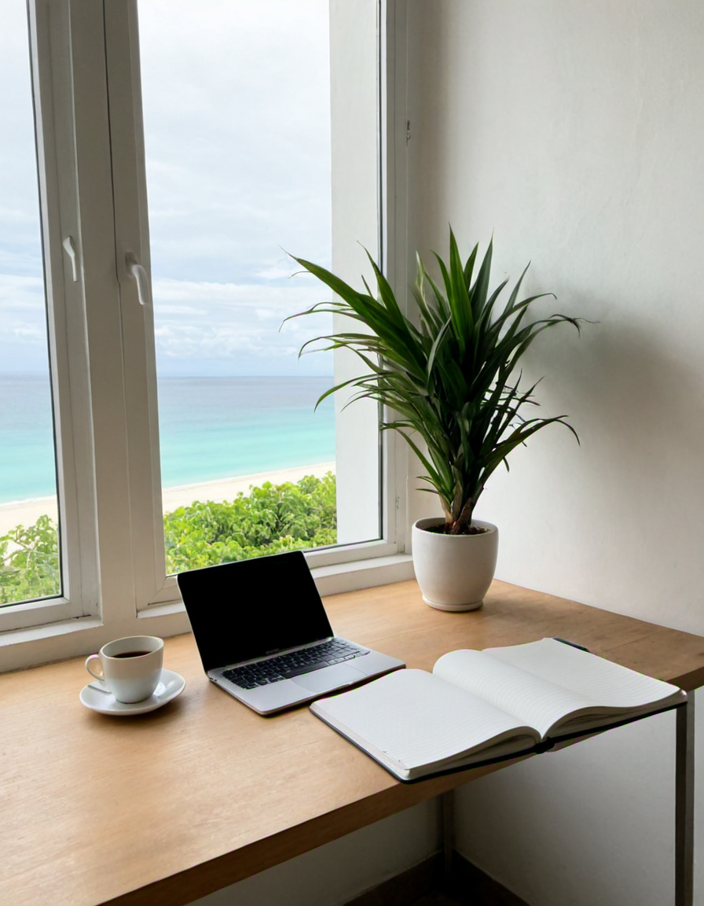
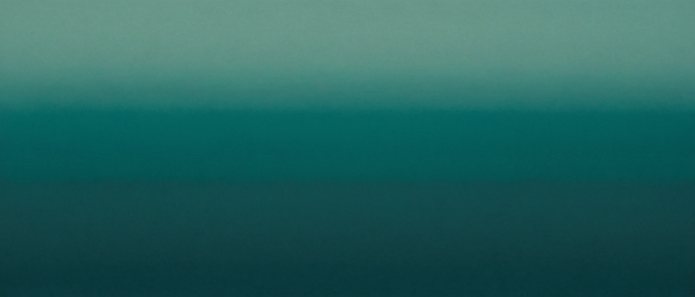

今ヒーローは「Splineの3Dの海」。これを実写級のラグーンに替えたり、プロフィールやデータ背景に上の画像を差し込みます。「違い」はこんな感じ：
今（Spline・CGの海）

反映後（実写ラグーン）
→ 「作り物っぽさ」が減り、高級リゾートの実写感が出ます。元に戻すのも一瞬。
全部、自宅のPCで無料生成。権利問題なし。文章を変えれば何枚でも作れます。




今ヒーローは「Splineの3Dの海」。これを実写級のラグーンに替えたり、プロフィールやデータ背景に上の画像を差し込みます。「違い」はこんな感じ：
→ 「作り物っぽさ」が減り、高級リゾートの実写感が出ます。元に戻すのも一瞬。
今のアザラシは「平面の絵」。3Dにすると指でくるくる回せて、光の当たり方も本物になります。下が実際の3D（指でドラッグ／スワイプしてみてください）：

今の画像は SDXL（epicrealism）。十分綺麗です。FLUXという別モデルにすると、細部や「画像内の文字」がさらに正確になります。ただし：
・髪/布/文字など細部がよりシャープ
・15GBのDLと少し遅い生成
・風景中心の今回は差は小さめ
→ 正直、今回のリゾート風景ならSDXLで十分。文字入り画像を多用するなら FLUX が効きます。
→ 人に見せる段階になったら公開。今はまだ作り込み中なので、後でもOK。